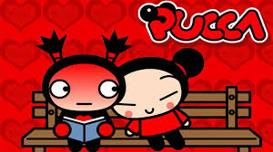
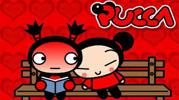

Mi primer Demo
"Letra"Pucca quiere a Garu divertido amor come fideos lo busco, lo beso bam, bam, bam pu,pu,pu,pu,pu,pu,pu,pu,pu,pucca dulce amor dum, dum pu,pu,pu,pu,pu,pu,pu,pu,pu,pucca dulce amor dum, dum. Pucca quiere a Garu divertido amor come fideos lo busco, lo beso bam, bam, bam
 
